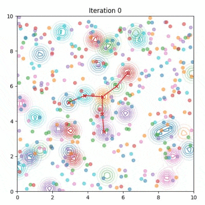
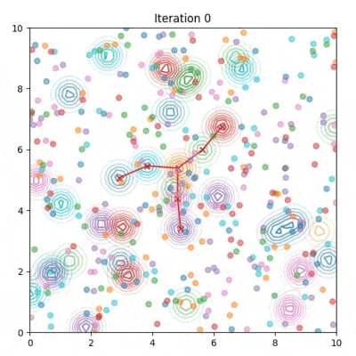

Decentralized control for multi-robot systems involves planning in complex, high-dimensional spaces. The planning problem is particularly challenging in the presence of potential collisions between robots and obstacles, and different sources of uncertainty such as inaccurate dynamic models and sensor noise. A multi-robot system can be represented as a graphical model, in which nodes represent individual robots and edges represent communication between robots. This representation enables the use of graphical inference algorithms for solving multi-robot control. In this short paper, we introduce Stein Variational Belief Propogation (SVBP), a novel algorithm for performing inference over the marginal distributions of nodes in a graph. We present simulation results which demonstrate that our method can represent complex, multi-modal distributions in localization and control tasks.
We implement our SVBP on a graph problem simulating perception under challenging noise conditions. The goal is to localize each node in the "spider" where the observation is the multi-modal Gaussian shown in the video.
SVBP (Ours)

Particle Belief Propagation

SVBP maintains modes of the distribution more effectively than Particle Belief Propagation, which relies on importance sampling.
Multi-Robot Planning
We apply SVBP to the multi-robot planning problem. Below are video results for each scene in the dataset.
Baselines
We implement different baselines to compare our algorithm. Click through the examples for each below.
Gaussian Belief Propagation
A version of our algorithm with a Gaussian trajectory distribution instead of a nonparametric one. The GaBP baseline is more likely to fall into local minima.
ORCA (20 cm radius)
The popular ORCA method (van den Berg 2011) is efficient but not as smooth as SVBP and prone to deadlock.
ORCA (40 cm radius)
When ORCA must maintain a slightly larger collision radius around the robots, the deadlock scenarios become increasingly apparent.